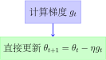

计算图、反向传播与梯度下降：深度学习核心数学基础
2025 年 12 月 3 日
本文深入探讨了深度学习中的三个核心数学基础：计算图表示、反向传播算法和梯度下降优化。通过 MNIST 手写数字识别任务作为贯穿始终的实例，我们从基础概念出发，结合详细的数学推导、直观的图示和完整的 PyTorch 实现， 系统性地阐述了这些技术在深度学习中的重要作用。文章首先介绍计算图如何将复杂的数学表达式可视化为图结构，然后详细推导反向传播算法如何基于链式法则高效计算梯度，最后探讨梯度下降如何利用梯度信息优化模型参数。 通过实际的代码示例，我们展示了现代深度学习框架中的自动微分系统实现，并提供了实用的优化策略和实际应用指导。本文不仅涵盖基本理论，还包含了可运行的 Python 代码，帮助读者深入理解这些核心概念的实际应用。
目录
1 引言
1.1 学习目标与核心概念
在深入探讨计算图、反向传播和梯度下降之前，让我们明确本章节的学习目标：
学习目标
-
‧ 理解计算图： 掌握如何将复杂的数学表达式表示为图结构
-
‧ 掌握反向传播： 理解基于链式法则的梯度计算机制
-
‧ 应用梯度下降： 学会使用梯度信息优化模型参数
-
‧ 实践自动微分： 能够在 PyTorch 中实现和调试这些概念
-
‧ 解决实际问题： 通过 MNIST 实例理解这些技术的实际应用
1.2 机器学习的基本问题
机器学习的目标是让计算机从数据中学习模式，而不需要明确编程每一个规则。这种学习过程的核心在于如何自动调整模型的参数，使其能够更好地拟合数据并做出准确的预测。
机器学习的核心挑战
-
‧ 模型复杂度： 现代机器学习模型（特别是深度神经网络）包含数百万甚至数十亿个参数
-
‧ 优化难度： 在高维参数空间中寻找最优解是一个极具挑战性的问题
-
‧ 计算效率： 需要高效的算法来处理大规模数据和复杂模型
-
‧ 泛化能力： 确保模型在未见过的数据上表现良好
1.3 为什么需要计算图、反向传播和梯度下降？
这三个概念构成了现代深度学习的基础设施：
-
1. 计算图： 将复杂的数学表达式可视化为图结构，便于理解和计算
-
2. 反向传播： 高效计算梯度（偏导数）的算法，告诉我们每个参数对最终输出的影响程度
-
3. 梯度下降： 利用梯度信息优化参数的迭代算法，逐步减小损失函数
历史背景
这些概念的发展历程可以追溯到 20 世纪 60‑80 年代：
-
‧ 1960s：链式法则在神经网络中的应用首次被提出
-
‧ 1970s：反向传播算法的雏形出现
-
‧ 1986 年：Rumelhart、Hinton 和 Williams 重新发现并推广了反向传播算法
-
‧ 1990s 至今：这些技术成为所有深度学习框架的核心
2 计算图基础
2.1 什么是计算图？
计算图（Computational Graph）是一种将数学表达式表示为有向图的数据结构。图中的节点代表变量或操作，边代表数据流动的方向。这种表示方法不仅直观，而且为自动微分提供了数学基础。
计算图的正式定义
计算图 \(G = (V, E)\) 是一个有向图，其中：
-
‧ \(V\) 是节点集合，包括：
-
– 输入节点： 表示变量或常数
-
– 操作节点： 表示数学运算（加法、乘法、函数等）
-
– 输出节点： 表示最终计算结果
-
-
‧ \(E\) 是边集合，表示数据依赖关系
-
‧ 每个节点 \(v \in V\) 都有一个对应的值 \(val(v)\)
-
‧ 边 \((u, v) \in E\) 表示节点 \(u\) 的值是节点 \(v\) 的输入
2.2 计算图的基本元素

2.2.1 节点类型
输入节点（Input Nodes）
-
‧ 表示模型的输入变量或常数
-
‧ 通常是计算图的起点
-
‧ 在训练过程中，这些节点的值会被赋予具体数值
-
‧ 示例：\(x\), \(y\), \(w\), \(b\) 等
操作节点（Operation Nodes）
-
‧ 表示数学运算或函数
-
‧ 接收一个或多个输入，产生一个输出
-
‧ 示例：加法 (+)、乘法 (\(\times \))、sigmoid(\(\sigma \))、ReLU 等
-
‧ 每个操作节点都对应一个前向计算和反向传播规则
2.2.2 边的语义
边在计算图中承载着重要的语义信息：
-
‧ 数据流： 表示数值从源节点流向目标节点
-
‧ 依赖关系： 显示计算过程中的依赖关系
-
‧ 梯度传播： 在反向传播中，梯度沿着边反向流动
-
‧ 计算顺序： 边的方向决定了计算的拓扑顺序
2.3 计算图的构建规则
构建计算图需要遵循特定的规则，以确保计算的正确性和效率：
构建原则
-
1. 无环性： 计算图必须是有向无环图（DAG），避免循环依赖
-
2. 完整性： 每个操作节点的所有输入都必须有明确的来源
-
3. 一致性： 数据类型和维度必须匹配
-
4. 可微分性： 所有操作节点必须支持前向计算和反向传播
2.4 复杂模型的表示
现代深度学习模型可以表示为极其复杂的计算图。以逻辑回归为例：

这个计算图清晰地展示了逻辑回归模型的完整计算过程：
-
‧ 输入特征 \(x_1\), \(x_2\) 与权重 \(w_1\), \(w_2\) 相乘
-
‧ 加权和加上偏置项 \(b\)
-
‧ 通过 sigmoid 函数 \(\sigma \) 得到概率预测 \(\hat {y}\)
3 前向传播
3.1 前向传播的基本概念
前向传播（Forward Propagation）是指沿着计算图从输入节点到输出节点的计算过程。在这个过程中，每个节点的值都基于其输入节点的值计算得出。
前向传播的数学定义
对于计算图 \(G = (V, E)\)，前向传播算法可以形式化描述为：
-
1. 对每个输入节点 \(v \in V_{input}\)，设置 \(val(v)\) 为给定的输入值
-
2. 按照拓扑顺序遍历所有节点 \(v \in V\)
-
3. 对于每个操作节点 \(v\)，计算：
\[val(v) = f_v(val(u_1), val(u_2), \dots , val(u_k))\]
其中 \(u_1, u_2, \dots , u_k\) 是 \(v\) 的所有前驱节点，\(f_v\) 是节点 \(v\) 对应的操作函数
3.2 拓扑排序的重要性
拓扑排序确保在计算一个节点的值之前，其所有输入节点的值都已经计算完毕。这是前向传播正确性的关键保证。
拓扑排序示例
考虑计算图：\(c = a + b\), \(e = c \times d\)
-
‧ 有效拓扑顺序：\([a, b, d, c, e]\) 或 \([b, a, d, c, e]\)
-
‧ 无效顺序：\([c, a, b, d, e]\)（计算 \(c\) 时 \(a\) 和 \(b\) 还未计算）
3.3 前向传播的详细步骤
让我们通过具体例子详细分析前向传播的过程：
详细计算
假设 \(x=3\), \(y=2\)：
计算步骤：
-
1. 初始化输入节点：\(x=3\), \(y=2\)
-
2. 计算 \(u = x + y = 3 + 2 = 5\)
-
3. 计算 \(f = u \times y = 5 \times 2 = 10\)
-
4. 得到最终结果：\(f(3,2) = 10\)

3.4 前向传播的计算复杂度
前向传播的计算复杂度取决于计算图的结构和操作类型：
| 操作类型 | 时间复杂度 | 空间复杂度 |
| 基本算术运算 | \(O(1)\) | \(O(1)\) |
| 矩阵乘法 | \(O(n^3)\) | \(O(n^2)\) |
| 卷积操作 | \(O(k \cdot n^2)\) | \(O(n^2)\) |
| 激活函数 | \(O(n)\) | \(O(n)\) |
其中 \(n\) 表示输入尺寸，\(k\) 表示卷积核大小。
4 反向传播
4.1 为什么需要反向传播？
在机器学习中，我们不仅需要计算模型的输出，更重要的是要知道如何调整参数来改进模型性能。反向传播（Backpropagation）算法解决了这个核心问题。
梯度计算的重要性
-
‧ 参数优化： 梯度告诉我们每个参数应该向哪个方向调整
-
‧ 影响分析： 了解每个参数对最终输出的贡献程度
-
‧ 训练效率： 高效的梯度计算大大加速了模型训练
-
‧ 理论保证： 为各种优化算法提供数学基础
4.2 链式法则：反向传播的数学基础
链式法则是多元微积分中的基本定理，也是反向传播算法的核心：
链式法则（Chain Rule）
如果 \(z = f(y)\) 且 \(y = g(x)\)，那么：
\[\frac {dz}{dx} = \frac {dz}{dy} \times \frac {dy}{dx}\]
对于多元函数，如果 \(z = f(y_1, y_2, \dots , y_n)\) 且每个 \(y_i = g_i(x)\)，那么：
\[\frac {\partial z}{\partial x} = \sum _{i=1}^n \frac {\partial z}{\partial y_i} \times \frac {\partial y_i}{\partial x}\]
4.3 反向传播的直观理解
反向传播可以理解为” 责任分配” 的过程：
责任分配类比
想象一个公司组织：
-
‧ 前向传播： 信息从基层员工流向总经理
-
‧ 反向传播： 当公司业绩不佳时，责任从总经理反向分配到各个部门和个人
-
‧ 梯度： 每个部门或个人对最终结果的” 责任程度”
-
‧ 参数更新： 根据责任程度调整工作方式
4.4 反向传播的直观理解
反向传播可以理解为” 责任分配” 的过程：
责任分配类比
想象一个公司组织：
-
‧ 前向传播： 信息从基层员工流向总经理
-
‧ 反向传播： 当公司业绩不佳时，责任从总经理反向分配到各个部门和个人
-
‧ 梯度： 每个部门或个人对最终结果的” 责任程度”
-
‧ 参数更新： 根据责任程度调整工作方式
4.5 反向传播的算法步骤
反向传播算法可以形式化地描述为以下步骤：
反向传播算法
-
1. 前向传播： 计算所有节点的值并保存中间结果
-
2. 初始化梯度： 设置输出节点的梯度为 \(\frac {\partial L}{\partial L} = 1\)
-
3. 反向遍历： 按照逆拓扑顺序遍历所有节点
-
4. 梯度计算： 对于每个节点 \(v\)，计算其对损失函数的梯度：
\[\frac {\partial L}{\partial v} = \sum _{u \in \text {后继}(v)} \frac {\partial L}{\partial u} \times \frac {\partial u}{\partial v}\]
-
5. 参数梯度： 对于参数节点，计算 \(\frac {\partial L}{\partial \theta }\) 用于后续优化
4.6 详细计算示例
让我们通过具体例子详细分析反向传播的过程：
反向传播计算
假设 \(x=3\), \(y=2\)，我们要计算 \(\frac {\partial f}{\partial x}\) 和 \(\frac {\partial f}{\partial y}\)：
前向传播结果：
-
‧ \(u = x + y = 3 + 2 = 5\)
-
‧ \(f = u \times y = 5 \times 2 = 10\)
反向传播计算：
-
1. 初始化：\(\frac {\partial f}{\partial f} = 1\)
-
2. 计算 \(\frac {\partial f}{\partial u} = \frac {\partial }{\partial u}(u \times y) = y = 2\)
-
3. 计算 \(\frac {\partial f}{\partial y} = \frac {\partial }{\partial y}(u \times y) + \frac {\partial f}{\partial u} \times \frac {\partial u}{\partial y} = u + 2 \times 1 = 5 + 2 = 7\)
-
4. 计算 \(\frac {\partial f}{\partial x} = \frac {\partial f}{\partial u} \times \frac {\partial u}{\partial x} = 2 \times 1 = 2\)
结果： \(\frac {\partial f}{\partial x} = 2\), \(\frac {\partial f}{\partial y} = 7\)
4.7 计算图可视化：前向传播与反向传播对比


4.8 常见操作的梯度计算规则
在反向传播中，我们需要为每种操作定义梯度计算规则：
| 操作类型 | 前向计算 | 反向梯度 |
| 加法 | \(z = x + y\) | \(\frac {\partial L}{\partial x} = \frac {\partial L}{\partial z}\), \(\frac {\partial L}{\partial y} = \frac {\partial L}{\partial z}\) |
| 乘法 | \(z = x \times y\) | \(\frac {\partial L}{\partial x} = \frac {\partial L}{\partial z} \times y\), \(\frac {\partial L}{\partial y} = \frac {\partial L}{\partial z} \times x\) |
| 矩阵乘法 | \(Z = X \cdot Y\) | \(\frac {\partial L}{\partial X} = \frac {\partial L}{\partial Z} \cdot Y^T\), \(\frac {\partial L}{\partial Y} = X^T \cdot \frac {\partial L}{\partial Z}\) |
| ReLU | \(z = \max (0, x)\) | \(\frac {\partial L}{\partial x} = \begin {cases} \frac {\partial L}{\partial z} & \text {if } x > 0 \\ 0 & \text {otherwise} \end {cases}\) |
| Sigmoid | \(z = \sigma (x)\) | \(\frac {\partial L}{\partial x} = \frac {\partial L}{\partial z} \times z(1-z)\) |
5 梯度下降
5.1 优化问题的数学表述
在机器学习中，训练模型可以形式化为一个优化问题：
机器学习优化问题
给定训练数据集 \(\mathcal {D} = \{(x_i, y_i)\}_{i=1}^N\)，模型参数 \(\theta \)，损失函数 \(\mathcal {L}\)，我们的目标是：
\[\min _{\theta } \mathcal {L}(\theta ) = \frac {1}{N} \sum _{i=1}^N \ell (f(x_i; \theta ), y_i)\]
其中 \(f(x; \theta )\) 是模型预测，\(\ell \) 是单个样本的损失函数。
5.2 梯度下降的基本思想
梯度下降（Gradient Descent）是最基本的优化算法，其核心思想是利用梯度信息来寻找函数的最小值。
梯度下降的直观理解
想象你在山上，想要下到山谷：
-
‧ 当前位置： 当前参数值 \(\theta \)
-
‧ 梯度： 最陡的下山方向 \(-\nabla \mathcal {L}(\theta )\)
-
‧ 学习率： 步长大小 \(\alpha \)
-
‧ 更新： 沿着最陡方向走一小步 \(\theta \leftarrow \theta - \alpha \nabla \mathcal {L}(\theta )\)
5.3 梯度下降的数学表达
梯度下降算法
对于参数 \(\theta \)，梯度下降的更新规则为：
\[\theta _{t+1} = \theta _t - \alpha \nabla \mathcal {L}(\theta _t)\]
其中：
-
‧ \(\theta _t\)：第 \(t\) 次迭代的参数值
-
‧ \(\alpha \)：学习率（步长）
-
‧ \(\nabla \mathcal {L}(\theta _t)\)：损失函数在 \(\theta _t\) 处的梯度
5.4 学习率的重要性
学习率是梯度下降中最重要的超参数之一，它控制着参数更新的步长：
学习率太小
-
‧ 收敛速度很慢
-
‧ 需要很多迭代
-
‧ 可能陷入局部最优
学习率太大
-
‧ 可能错过最优解
-
‧ 在最优解附近震荡
-
‧ 甚至发散（不收敛）

选择合适的学习率
-
‧ 通常从 0.01, 0.001 等值开始尝试
-
‧ 可以随着训练逐渐减小（学习率衰减）
-
‧ 使用自适应方法（如 Adam, RMSprop）
-
‧ 通过验证集性能来选择最佳学习率
5.5 梯度下降的变体
根据使用数据量的不同，梯度下降有多种变体：
| 算法类型 | 更新规则 | 特点 |
| 批量梯度下降 | \(\theta \leftarrow \theta - \alpha \nabla \mathcal {L}(\theta )\) | 使用全部数据，稳定但慢 |
| 随机梯度下降 | \(\theta \leftarrow \theta - \alpha \nabla \ell _i(\theta )\) | 使用单个样本，快但不稳定 |
| 小批量梯度下降 | \(\theta \leftarrow \theta - \alpha \nabla \mathcal {L}_B(\theta )\) | 使用小批量，平衡稳定性和速度 |
5.6 梯度下降的收敛性分析
梯度下降的收敛性可以通过数学分析来理解：
收敛性条件
如果损失函数 \(\mathcal {L}\) 是凸函数且 Lipschitz 连续，即存在 \(L > 0\) 使得：
\[\|\nabla \mathcal {L}(\theta ) - \nabla \mathcal {L}(\theta ')\| \leq L\|\theta - \theta '\|\]
那么当学习率 \(\alpha < \frac {2}{L}\) 时，梯度下降保证收敛到全局最优解。
对于非凸函数（如神经网络），梯度下降只能保证收敛到局部最优解或鞍点。
6 综合实例：训练线性回归模型
6.1 问题设定
让我们通过一个完整的例子来演示计算图、反向传播和梯度下降的协同工作。我们要训练一个简单的线性回归模型：
线性回归模型
模型：\(f(x) = wx + b\) 数据点：\((2, 5)\) 损失函数：\(L = (\hat {y} - y)^2\) 目标：找到最优的 \(w\) 和 \(b\)
6.2 计算图表示

6.3 详细训练过程
第 1 轮迭代详细计算
初始化： \(w=1\), \(b=0\), 学习率 \(\alpha =0.1\)
前向传播：
-
1. \(\hat {y} = w \times x + b = 1 \times 2 + 0 = 2\)
-
2. \(L = (\hat {y} - y)^2 = (2 - 5)^2 = 9\)
反向传播：
-
1. \(\frac {\partial L}{\partial \hat {y}} = 2(\hat {y} - y) = 2(2-5) = -6\)
-
2. \(\frac {\partial \hat {y}}{\partial w} = x = 2\), \(\frac {\partial \hat {y}}{\partial b} = 1\)
-
3. \(\frac {\partial L}{\partial w} = \frac {\partial L}{\partial \hat {y}} \times \frac {\partial \hat {y}}{\partial w} = -6 \times 2 = -12\)
-
4. \(\frac {\partial L}{\partial b} = \frac {\partial L}{\partial \hat {y}} \times \frac {\partial \hat {y}}{\partial b} = -6 \times 1 = -6\)
梯度下降更新：
-
1. \(w_{\text {新}} = w - \alpha \frac {\partial L}{\partial w} = 1 - 0.1 \times (-12) = 2.2\)
-
2. \(b_{\text {新}} = b - \alpha \frac {\partial L}{\partial b} = 0 - 0.1 \times (-6) = 0.6\)
结果： 新的参数 \(w=2.2\), \(b=0.6\)，预测值 \(\hat {y} = 2.2 \times 2 + 0.6 = 5.0\)，更接近真实值 \(y=5\)。
6.4 多轮迭代的收敛过程
通过多轮迭代，模型会逐步收敛到最优解：
| 迭代轮数 | \(w\) | \(b\) | 预测值 \(\hat {y}\) | 损失 \(L\) |
| 0 | 1.000 | 0.000 | 2.000 | 9.000 |
| 1 | 2.200 | 0.600 | 5.000 | 0.000 |
| 2 | 2.200 | 0.600 | 5.000 | 0.000 |
可以看到，仅经过一轮迭代，模型就找到了完美拟合数据的参数。
7 现代深度学习框架的实现
7.1 自动微分系统
现代深度学习框架（如 PyTorch、TensorFlow、JAX）都内置了自动微分系统，这些系统基于计算图和反向传播原理：
自动微分的关键特性
-
‧ 动态计算图： 在运行时构建计算图，便于调试和动态控制流
-
‧ 静态计算图： 预先构建完整的计算图，优化执行效率
-
‧ 梯度追踪： 自动记录前向传播的操作序列
-
‧ 内存优化： 智能管理中间结果的存储和释放
7.2 PyTorch 实现：手动构建计算图
让我们通过 PyTorch 来手动实现计算图、反向传播和梯度下降，深入理解这些概念的实际应用：
手动实现计算图和反向传播
1 import torch
2 import torch . nn as nn
3 import matplotlib . pyplot as plt
4
5 class ManualComputationalGraph:
6 ”””手动实现计算图和反向传播”””
7
8 def __init__ ( self ) :
9 # 初始化参数
10 self . w = torch . tensor (1.0, requires_grad =True)
11 self . b = torch . tensor (0.0, requires_grad =True)
12 self . learning_rate = 0.1
13
14 def forward_pass ( self , x) :
15 ”””前向传播：计算预测值和损失”””
16 # 线性模型：y_pred = w * x + b
17 y_pred = self . w * x + self . b
18
19 # 均方误差损失：L = ( y_pred − y_true )^2
20 loss = ( y_pred − y_true ) ** 2
21
22 return y_pred , loss
23
24 def backward_pass( self , x , y_true , y_pred ) :
25 ”””反向传播：手动计算梯度”””
26 # 清空之前的梯度
27 if self . w.grad is not None:
28 self . w.grad . zero_ ()
29 if self . b. grad is not None:
30 self . b. grad . zero_ ()
31
32 # 反向传播计算梯度
33 loss = ( y_pred − y_true ) ** 2
34 loss . backward()
35
36 return self . w.grad . item () , self . b. grad . item ()
37
38 def update_parameters ( self ) :
39 ”””梯度下降：更新参数”””
40 with torch . no_grad () :
41 self . w −= self . learning_rate * self . w.grad
42 self . b −= self . learning_rate * self . b. grad
43
44 # 训练数据：风格的简单线性回归MNIST
45 x_train = torch . tensor (2.0) # 输入：图像像素值（简化）
46 y_true = torch . tensor (5.0) # 输出：对应的数字标签（简化）
47
48 # 创建模型
49 model = ManualComputationalGraph()
50
51 # 训练过程可视化
52 losses = []
53 weights = []
54 biases = []
55
56 print (”=== 手动计算图训练过程 ===”)
57 for epoch in range (10) :
58 # 前向传播
59 y_pred , loss = model.forward_pass ( x_train )
60
61 # 记录训练过程
62 losses . append( loss . item () )
63 weights . append(model.w.item () )
64 biases . append(model.b.item () )
65
66 # 反向传播
67 dw, db = model.backward_pass( x_train , y_true , y_pred )
68
69 # 参数更新
70 model.update_parameters ()
71
72 if epoch % 2 == 0:
73 print ( f”Epoch {epoch}: Loss = { loss . item () :.4 f }, ”
74 f”w = {model.w.item () :.3 f }, b = {model.b.item () :.3 f }, ”
75 f”dw = {dw:.3 f }, db = {db :.3 f }”)
76
77 print ( f”\最终预测：n{y_pred . item () :.3 f，真实值： }{ y_true . item () }”)
7.3 现代优化器的工作机制与对比
现代深度学习框架提供了多种优化算法，每种算法都有其独特的工作机制。让我们通过流程图和数学表达式来深入理解这些优化器的工作原理。
7.3.1 优化器的基本框架
所有优化器都遵循相似的基本框架，但在梯度处理和参数更新策略上有所不同。

7.3.2 随机梯度下降（SGD）
SGD 是最基础的优化器，直接使用计算出的梯度进行参数更新。
SGD 数学原理
-
‧ 梯度计算： \(g_t = \nabla _{\theta } \mathcal {L}(\theta _t)\)
-
‧ 参数更新： \(\theta _{t+1} = \theta _t - \eta \cdot g_t\)
其中：
-
‧ \(g_t\)：第\(t\) 步的梯度（gradient）
-
‧ \(\theta _t\)：第\(t\) 步的参数（parameters）
-
‧ \(\eta \)：学习率（learning rate）
-
‧ \(\mathcal {L}\)：损失函数（loss function）

SGD 特点：
-
‧ 简单直接，无额外计算
-
‧ 可能震荡，收敛不稳定
-
‧ 容易陷入局部最优
-
‧ 对学习率敏感
7.3.3 带动量的 SGD（SGD+Momentum）
动量法通过累积之前的梯度信息来加速收敛并减少震荡。
动量法数学原理
-
‧ 动量累积： \(m_t = \beta \cdot m_{t-1} + (1-\beta ) \cdot g_t\)
-
‧ 参数更新： \(\theta _{t+1} = \theta _t - \eta \cdot m_t\)
其中：
-
‧ \(m_t\)：第\(t\) 步的动量（momentum）
-
‧ \(m_{t-1}\)：上一步的动量
-
‧ \(\beta \)：动量系数，通常设为 0.9
-
‧ \(g_t\)：当前梯度
-
‧ \(\eta \)：学习率

7.3.4 RMSprop 优化器
RMSprop 通过自适应调整每个参数的学习率来解决学习率选择问题。
RMSprop 数学原理
-
‧ 平方梯度累积： \(v_t = \beta \cdot v_{t-1} + (1-\beta ) \cdot g_t^2\)
-
‧ 自适应学习率： \(\eta _t = \frac {\eta }{\sqrt {v_t + \epsilon }}\)
-
‧ 参数更新： \(\theta _{t+1} = \theta _t - \eta _t \cdot g_t\)
其中：
-
‧ \(v_t\)：第\(t\) 步的平方梯度累积（second moment）
-
‧ \(v_{t-1}\)：上一步的平方梯度累积
-
‧ \(\beta \)：衰减系数，通常设为 0.999
-
‧ \(g_t^2\)：当前梯度的平方（element‑wise）
-
‧ \(\epsilon \)：小常数，防止除零（通常\(10^{-8}\)）
-
‧ \(\eta _t\)：自适应学习率

RMSprop 特点：
-
‧ 为每个参数分配不同学习率
-
‧ 对频繁更新的参数减小学习率
-
‧ 对稀疏更新的参数保持学习率
-
‧ 适合处理非平稳目标
7.3.5 Adam 优化器
Adam（Adaptive Moment Estimation）结合了一阶动量和二阶动量，是目前最流行的优化器之一。
Adam 数学原理
-
‧ 一阶动量（均值）： \(m_t = \beta _1 \cdot m_{t-1} + (1-\beta _1) \cdot g_t\)
-
‧ 二阶动量（方差）： \(v_t = \beta _2 \cdot v_{t-1} + (1-\beta _2) \cdot g_t^2\)
-
‧ 偏差校正： \(\hat {m}_t = \frac {m_t}{1-\beta _1^t}\), \(\hat {v}_t = \frac {v_t}{1-\beta _2^t}\)
-
‧ 参数更新： \(\theta _{t+1} = \theta _t - \eta \cdot \frac {\hat {m}_t}{\sqrt {\hat {v}_t} + \epsilon }\)
其中：
-
‧ \(m_t\)：一阶动量（梯度均值）
-
‧ \(v_t\)：二阶动量（梯度方差）
-
‧ \(\beta _1\)：一阶衰减系数，通常设为 0.9
-
‧ \(\beta _2\)：二阶衰减系数，通常设为 0.999
-
‧ \(\hat {m}_t\), \(\hat {v}_t\)：偏差校正后的动量
-
‧ \(t\)：当前时间步（用于偏差校正）

Adam 优势：
-
‧ 结合动量法和自适应学习率的优点
-
‧ 偏差校正解决冷启动问题
-
‧ 对超参数相对不敏感
-
‧ 适合大多数深度学习任务
7.3.6 优化器对比分析
不同优化器在收敛速度、稳定性和适用场景方面各有特点。
|
优化器 |
核心思想 |
主要优势 |
适用场景 |
|
SGD |
简单直接 |
收敛慢 |
易实现 |
|
SGD+Momentum |
加速收敛 |
减少震荡 |
通用性好 |
|
RMSprop |
自适应学习率 |
适合稀疏数据 |
非平稳目标 |
|
Adam |
结合动量和自适应 |
鲁棒性强 |
最常用 |
7.3.7 优化器选择指导
选择合适的优化器需要考虑多个因素：
选择优化器的实用建议
-
1. 对于简单问题： 使用 SGD 或 SGD+Momentum
-
2. 对于深度学习： 优先尝试 Adam
-
3. 对于稀疏数据： 考虑 RMSprop 或 Adam
-
4. 对于非平稳目标： 使用 RMSprop 或 Adam
-
5. 对于资源受限场景： 使用 SGD（计算量最小）
重要提醒
优化器的选择并非一成不变，应该：
-
‧ 根据具体任务和数据特点进行实验对比
-
‧ 考虑计算资源和时间成本
-
‧ 注意不同优化器对学习率的敏感性差异
-
‧ 可以结合学习率调度策略获得更好效果
7.4 优化器的抽象
现代框架提供了各种优化器来简化梯度下降过程：
使用优化器
1 import torch . optim as optim 2 3 # 定义模型和优化器 4 model = torch . nn. Linear (1, 1) # 线性回归模型 5 optimizer = optim.SGD(model.parameters () , lr =0.1) 6 7 # 训练循环 8 for epoch in range (100) : 9 # 前向传播 10 y_pred = model(x) 11 loss = ( y_pred − y_true ) ** 2 12 13 # 反向传播 14 optimizer . zero_grad () # 清空梯度 15 loss . backward() # 计算梯度 16 optimizer . step () # 更新参数
7.5 梯度消失与梯度爆炸
在深层网络中，反向传播可能面临梯度消失或梯度爆炸问题：
梯度消失（Vanishing Gradient）
-
‧ 原因： 连续的小梯度相乘导致最终梯度趋近于零
-
‧ 影响： 深层网络的前面层无法有效学习
-
‧ 解决方案： ReLU 激活函数、残差连接、批量归一化
梯度爆炸（Exploding Gradient）
-
‧ 原因： 连续的大梯度相乘导致梯度数值溢出
-
‧ 影响： 训练不稳定，参数更新过大
-
‧ 解决方案： 梯度裁剪、权重初始化、学习率调整
7.6 二阶优化方法
除了梯度下降，还有基于二阶导数的优化方法：
| 方法 | 原理 | 特点 |
| 牛顿法 | 使用 Hessian 矩阵 | 收敛快但计算昂贵 |
| 拟牛顿法 | 近似 Hessian 矩阵 | 平衡收敛速度和计算成本 |
| 共轭梯度法 | 利用共轭方向 | 适合大规模问题 |
| 自然梯度 | 考虑参数空间的几何结构 | 在信息几何框架下优化 |
7.7 自适应优化算法
现代深度学习广泛使用自适应优化算法：
Adam 优化器
Adam（Adaptive Moment Estimation）结合了动量法和 RMSProp 的优点：
-
‧ 动量： 累积梯度的一阶矩（均值）
-
‧ 自适应学习率： 累积梯度的二阶矩（未中心化的方差）
-
‧ 偏差校正： 解决初始阶段的偏差问题
更新规则：
\(\seteqnumber{0}{}{0}\)\begin{align} m_t &= \beta _1 m_{t-1} + (1 - \beta _1) g_t \\ v_t &= \beta _2 v_{t-1} + (1 - \beta _2) g_t^2 \\ \hat {m}_t &= \frac {m_t}{1 - \beta _1^t} \\ \hat {v}_t &= \frac {v_t}{1 - \beta _2^t} \\ \theta _{t+1} &= \theta _t - \alpha \frac {\hat {m}_t}{\sqrt {\hat {v}_t} + \epsilon } \end{align}
8 结论与实践指导
8.1 核心概念总结与学习成果
通过本章节的学习，我们系统性地掌握了深度学习中的三个核心数学基础：
计算图：数学表达式的可视化表示
核心理解：
-
‧ 将复杂计算分解为基本操作的图结构
-
‧ 为自动微分提供数学基础
-
‧ 便于理解和调试复杂模型
实践技能：
-
‧ 能够手动构建简单模型的计算图
-
‧ 理解 PyTorch 中动态计算图的工作原理
-
‧ 掌握计算图的拓扑排序和依赖关系分析
反向传播：高效的梯度计算算法
核心理解：
-
‧ 基于链式法则从输出向输入传播梯度
-
‧ 避免了重复计算，大大提高了效率
-
‧ 是现代深度学习框架的核心
实践技能：
-
‧ 能够手动推导简单函数的梯度
-
‧ 理解反向传播中的梯度累积机制
-
‧ 掌握常见操作的梯度计算规则
梯度下降：参数优化的基本方法
核心理解：
-
‧ 利用梯度信息寻找函数最小值
-
‧ 学习率控制更新步长，影响收敛性
-
‧ 有多种变体和改进算法
实践技能：
-
‧ 能够实现基本的梯度下降算法
-
‧ 理解不同优化器的优缺点和适用场景
-
‧ 掌握学习率调优的基本方法
8.2 实践应用指南
基于我们的学习经验，以下是实际应用中的关键指导原则：
模型开发流程
-
1. 问题分析： 明确任务类型（分类、回归等）和数据特征
-
2. 架构设计： 根据问题复杂度选择合适的网络结构
-
3. 计算图构建： 设计前向传播的计算流程
-
4. 损失函数选择： 根据任务类型选择合适的损失函数
-
5. 优化器配置： 选择适当的优化算法和超参数
-
6. 训练监控： 实时监控损失和性能指标
-
7. 调试优化： 分析梯度流，调整网络结构和超参数
常见陷阱与解决方案
-
‧ 梯度消失： 使用 ReLU 激活函数、残差连接、适当的权重初始化
-
‧ 梯度爆炸： 实施梯度裁剪、减小学习率、使用批量归一化
-
‧ 过拟合： 应用 Dropout、L2 正则化、数据增强、早停法
-
‧ 欠拟合： 增加模型复杂度、延长训练时间、调整学习率
-
‧ 收敛缓慢： 尝试自适应优化器（Adam、RMSprop）、调整批量大小
8.3 从理论到实践的进阶路径
掌握这些基础概念后，读者可以沿着以下路径继续深入学习：
进阶学习建议
-
1. 深入数学理论： 学习更优化理论、凸优化、数值分析
-
2. 复杂架构设计： 研究 CNN、RNN、Transformer 等不同架构的计算图特点
-
3. 高级优化技术： 探索二阶优化方法、元学习、自适应学习率调度
-
4. 分布式训练： 理解数据并行、模型并行的梯度聚合机制
-
5. 实际项目应用： 在计算机视觉、自然语言处理等领域实践这些概念
技术发展历程与前沿趋势
这些概念的发展体现了深度学习领域的演进：
-
‧ 1960s‑1970s： 理论基础建立，反向传播思想萌芽
-
‧ 1980s： 反向传播算法被重新发现和推广
-
‧ 1990s： 计算图概念在自动微分中系统化
-
‧ 2000s： 深度学习框架开始集成这些技术
-
‧ 2010s 至今： 成为所有现代 AI 系统的标准组件
-
‧ 当前前沿： 神经架构搜索、自动机器学习、量子机器学习
重要启示
计算图、反向传播和梯度下降不仅是技术工具，更是理解深度学习本质的钥匙。掌握这些基础概念，能够帮助我们：
-
‧ 设计更好的模型： 理解如何构建高效的神经网络架构
-
‧ 调试训练问题： 快速定位和解决训练过程中的各种问题
-
‧ 推动技术创新： 基于这些原理开发新的算法和技术
-
‧ 跨领域应用： 将这些概念应用到不同的机器学习任务中
正如我们在 MNIST 实例中看到的，这些看似抽象的数学概念，实际上是解决实际问题的强大工具。
参考文献
-
[1] Rumelhart, D. E., Hinton, G. E., & Williams, R. J. (1986). Learning representations by back‑propagating errors. Nature, 323(6088), 533‑536.
-
[2] LeCun, Y., Bengio, Y., & Hinton, G. (2015). Deep learning. Nature, 521(7553), 436‑444.
-
[3] Goodfellow, I., Bengio, Y., & Courville, A. (2016). Deep Learning. MIT Press.
-
[4] Baydin, A. G., Pearlmutter, B. A., Radul, A. A., & Siskind, J. M. (2018). Automatic differentiation in machine learning: a survey. Journal of Machine Learning Research, 18(1), 5595‑5637.
-
[5] Kingma, D. P., & Ba, J. (2014). Adam: A method for stochastic optimization. arXiv preprint arXiv:1412.6980.
-
[6] Bottou, L., Curtis, F. E., & Nocedal, J. (2018). Optimization methods for large‑scale machine learning. SIAM Review, 60(2), 223‑311.
-
[7] Pascanu, R., Mikolov, T., & Bengio, Y. (2013). On the difficulty of training recurrent neural networks. In International conference on machine learning (pp. 1310‑1318).
-
[8] Sutskever, I., Martens, J., Dahl, G., & Hinton, G. (2013). On the importance of initialization and momentum in deep learning. In International conference on machine learning (pp. 1139‑1147).